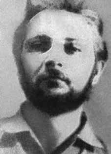

Boanerges
de Souza
Massa
CIRCUNSTÂNCIAS DA MORTE
O desaparecimento de Boanerges de Souza Massa esteve intimamente vinculado a seu retorno ao Brasil. Com o término das atividades da terceira turma de preparação de guerrilheiros em Cuba, em fins de 1970, o “Grupo dos 28” ou “Grupo da Ilha” foi preparado seu retorno ao país, para dar prosseguimento à organização da luta armada.
No decorrer de 1971, oito integrantes do grupo voltaram para o país, utilizando nomes falsos, portando documentos confeccionados em Cuba. Após sondagens iniciais, um grupo estabeleceu-se no norte de Goiás, em uma região cortada pela estrada Belém-Brasília, próxima ao Pará e ao Maranhão. A cidade de Araguaína foi escolhida como base de operações do grupo, constituído por Jeová de Assis Gomes (chefe), Boanerges de Souza Massa, Ruy Carlos Vieira Berbert, Sérgio Capozzi, Jane Vanine e Otávio Ângelo.
Em 21 de dezembro de 1971, Boanerges foi capturado pela Polícia Militar do Estado de Goiás (PMEGO), na cidade de Pindorama (atualmente, estado de Tocantins). Nesse momento, realizavam-se as ações das primeiras equipes de reconhecimento enviadas pelos órgãos de segurança à região, com vistas a combater os guerrilheiros. Os trabalhos dessas equipes foram chefiados por oficiais à paisana do Destacamento de Operações de Informações – Centro de Operações de Defesa Interna do Comando Militar do Planalto (DOI-CODI/CMP), do Destacamento de Operações de Informações da 3ª Brigada de Infantaria (DOI/3ª BDA INF) e da Agência Distrito Federal do Centro de Informações do Exército (CIE/ADF).
Ao ser capturado, Boanerges vivia como vendedor de produtos farmacêuticos e portava carteiras de identidade falsas, com os nomes de Júlio Martins e Moisés Leôncio Braga. Foi supostamente conduzido de Pindorama para Porto Nacional, então estado de Goiás, de onde sua prisão foi comunicada ao Comando Militar do Planalto/11ª Região Militar (CMP/11ª RM). Pouco depois, em 26 de dezembro, foi removido para Brasília, por meio de transporte aéreo realizado pela 6ª Zona Aérea (6ª ZAer). Pesa sobre Boanerges a suspeita de ser o informante que permitiu o desmantelamento do Grupo da Ilha.
O Relatório Periódico de Informações no 24 da Agência Central do Serviço Nacional de Informações (SNI), com data de abrangência de 16 a 31 de dezembro de 1971, não confere sustentação a essa tese. O item “a. Regresso ao Brasil de terroristas treinados em Cuba” destaca os desdobramentos da prisão de um militante portando identidade falsa, com o nome de Eduardo Pratini. A partir da análise da fonte, foi possível: “(i) identificar e, segundo a versão oficial, eliminar em tiroteios ocorridos durante a prisão, três guerrilheiros que retornavam de Cuba;” e, “(ii) tomar conhecimento da existência de uma dissidência da ALN, a ‘Operação Ilha’.”
Já em outro ponto do documento, o item “c. BOANERGES DE SOUZA MASSA, terrorista foragido, em Goiás”, aponta informações sobre o médico, com detalhes sobre a prisão do militante do Molipo em fins de dezembro de 1971, no interior de Goiás. Segundo informações oficiais, Boanerges haveria informado a data de “pontos” com outros companheiros e a localização de uma fazenda do Molipo na região de Araguaína (atual Tocantins), além de detalhes sobre integrantes do Grupo da Ilha. Informações consideradas decisivas para a prisão de Ruy Caros Vieira Berbert.
Por seu turno, as prisões de Jeová Assis Gomes e do casal, Sérgio Capozzi e Jane Vanine Capozzi, só não ocorreram de imediato em razão da dificuldade das forças de segurança para chegar à localidade. Portanto, mesmo que as declarações sobre “pontos” e a localização da fazenda que servia de base de operações da organização política possam ter sido declaradas por Boanerges, isso só ocorreu após sua captura e aprisionamento, o que não configura o gatilho inicial que desencadeou a operação para o desmantelamento do Molipo.
Após sua prisão e movimentações iniciais, pouco se sabe sobre o que aconteceu com Boanerges. Nos acervos, há apenas algumas pistas. Por meio da Informação no 197/72- E2.2, de 27 de junho de 1972, por exemplo, a 2ª Seção do Estado-Maior do Exército relatou detalhes sobre a situação de militantes da ALN que frequentaram cursos em Cuba. Nesse documento, registra-se que, em 21 de junho de 1972, Boanerges ainda se encontrava preso, embora sem indicação de detalhes sobre o local. Taís Morais, por sua vez, com base nas declarações de “Carioca”, agente ligado ao Centro de Informações do Exército (CIE), oferece uma versão para a morte de Boanerges e algumas pistas sobre a possível localização de seus restos mortais.
Ao ser levado para o Distrito Federal pela Polícia do Exército, Boanerges teria ficado detido no Pelotão de Investigações Criminais do Batalhão de Polícia do Exército (PIC/BPE), sendo, posteriormente, transferido para um “aparelho” (instalação clandestina) do CIE. Segundo consta, esse aparelho ficava na zona rural de Formosa, cidade goiana a cerca de 70km da capital federal. Em seguida, Carioca ficou sabendo por Geverci – jovem soldado, de origem camponesa e responsável pela vigilância do aparelho – que o médico havia sido morto e levado o seu corpo. Geverci teria narrado o acontecido a Carioca mais ou menos nos seguintes termos: “Foi feito e enterrado por aí. A equipe veio, levou o homem de madrugada e sumiu com ele”. Provavelmente, foi sepultado nas proximidades de Formosa.
O Ministério Público Federal (MPF) de Tocantins ingressou com uma Ação Civil Pública em novembro de 2012, protocolada sob o nº 0007792-21.2012.4.01.4300, com trâmite na 2ª Vara Federal de Tocantins, requerendo a responsabilização penal e civil de Lício Augusto Ribeiro Maciel como autor e partícipe da prisão ilegal e morte de Boanerges de Souza Massa, assim como de outros militantes que morreram ou desapareceram no hoje estado do Tocantins.
O MPF requereu também a cessação dos benefícios de aposentadoria ou inatividade percebidos pelo militar, além de sua condenação para suportar o valor da indenização paga pela União Federal à família, em virtude de pagamento realizado por comissão de reparação. Requereu, ainda, a condenação da União Federal, no sentido de empreender medidas para a localização dos restos mortais de Boanerges de Souza Massa e Ruy Carlos Vieira Berbert.
The disappearance of Boanerges de Souza Massa was closely linked to his return to Brazil. With the end of the activities of the third guerrilla training group in Cuba, at the end of 1970, the “Group of 28” or “Island Group” was prepared to return to the country, to continue organizing the armed struggle.
During 1971, eight members of the group returned to the country, using false names, carrying documents prepared in Cuba. After initial surveys, a group established itself in the north of Goiás, in a region crossed by the Belém-Brasília road, close to Pará and Maranhão. The city of Araguaína was chosen as the base of operations for the group, made up of Jeová de Assis Gomes (leader), Boanerges de Souza Massa, Ruy Carlos Vieira Berbert, Sérgio Capozzi, Jane Vanine and Otávio Ângelo.
On December 21, 1971, Boanerges was captured by the Military Police of the State of Goiás (PMEGO), in the city of Pindorama (currently, the state of Tocantins). At that time, the first reconnaissance teams sent by security agencies to the region were carrying out actions, with a view to combating the guerrillas. The work of these teams was led by plainclothes officers from the Information Operations Detachment – Internal Defense Operations Center of the Planalto Military Command (DOI-CODI/CMP), the Information Operations Detachment of the 3rd Infantry Brigade (DOI/3rd BDA INF) and the Federal District Agency of the Army Information Center (CIE/ADF).
When captured, Boanerges lived as a pharmaceutical salesman and carried false identity cards with the names of Júlio Martins and Moisés Leôncio Braga. He was allegedly taken from Pindorama to Porto Nacional, then in the state of Goiás, from where his arrest was reported to the Planalto Military Command/11th Military Region (CMP/11th RM). Shortly afterwards, on December 26, it was removed to Brasília, via air transport carried out by the 6th Air Zone (6th ZAer). Boanerges is suspected of being the informant who allowed the dismantling of the Ilha Group.
Periodic Information Report No. 24 of the Central Agency of the National Information Service (SNI), with a coverage date of December 16 to 31, 1971, does not support this thesis. The item "a. Return to Brazil of terrorists trained in Cuba" highlights the consequences of the arrest of a militant carrying a false identity, named Eduardo Pratini. Based on the analysis of the source, it was possible: “(i) to identify and, according to the official version, eliminate in shootings that occurred during the arrest, three guerrillas who were returning from Cuba;” and, “(ii) become aware of the existence of a dissent from the ALN, ‘Operation Island’.”
Elsewhere in the document, the item “c. BOANERGES DE SOUZA MASSA, fugitive terrorist, in Goiás”, provides information about the doctor, with details about the arrest of the Molipo militant at the end of December 1971, in the interior of Goiás. According to official information, Boanerges had informed the date of “points” with other companions and the location of a Molipo farm in the region of Araguaína (currently Tocantins), in addition details about members of the Island Group. Information considered decisive for the arrest of Ruy Caros Vieira Berbert.
In turn, the arrests of Jeová Assis Gomes and the couple, Sérgio Capozzi and Jane Vanine Capozzi, did not occur immediately due to the difficulty of security forces in reaching the location. Therefore, even though the statements about “points” and the location of the farm that served as the political organization's base of operations may have been declared by Boanerges, this only occurred after his capture and imprisonment, which does not constitute the initial trigger that triggered the operation to dismantle Molipo.
After his arrest and initial movements, little is known about what happened to Boanerges. In the collections, there are only a few clues. Through Information No. 197/72- E2.2, of June 27, 1972, for example, the 2nd Section of the Army General Staff reported details about the situation of ALN militants who attended courses in Cuba. In this document, it is recorded that, on June 21, 1972, Boanerges was still imprisoned, although no details were given about the location. Taís Morais, in turn, based on the statements of “Carioca”, an agent linked to the Army Information Center (CIE), offers a version of Boanerges' death and some clues about the possible location of his remains.
When taken to the Federal District by the Army Police, Boanerges was reportedly detained in the Criminal Investigations Platoon of the Army Police Battalion (PIC/BPE), and was subsequently transferred to a CIE “apparatus” (clandestine facility). According to reports, this device was located in the rural area of Formosa, a city in Goiás about 70km from the federal capital. Then, Carioca learned from Geverci – a young soldier, of peasant origin and responsible for monitoring the device – that the doctor had been killed and his body taken. Geverci would have narrated what happened to Carioca in more or less the following terms: "It was done and buried there. The team came, took the man at dawn and disappeared with him." He was probably buried near Formosa.
The Federal Public Ministry (MPF) of Tocantins filed a Public Civil Action in November 2012, filed under number 0007792-21.2012.4.01.4300, pending in the 2nd Federal Court of Tocantins, requesting the criminal and civil liability of Lício Augusto Ribeiro Maciel as the author and participant in the illegal arrest and death of Boanerges de Souza Massa, as well as other militants who died or disappeared in what is now the state of Tocantins.
The MPF also requested the cessation of retirement or inactivity benefits received by the soldier, in addition to his conviction to bear the value of the compensation paid by the Federal Union to the family, due to payment made by a reparation commission. It also requested the Federal Union's condemnation, in order to take measures to locate the mortal remains of Boanerges de Souza Massa and Ruy Carlos Vieira Berbert.
La desaparición de Boanerges de Souza Massa estuvo estrechamente ligada a su regreso a Brasil. Con el fin de las actividades del tercer grupo de entrenamiento guerrillero en Cuba, a finales de 1970, el “Grupo de los 28” o “Grupo Insular” se dispuso a regresar al país, para continuar organizando la lucha armada.
Durante 1971, ocho miembros del grupo regresaron al país, usando nombres falsos, portando documentos preparados en Cuba. Después de los primeros reconocimientos, un grupo se estableció en el norte de Goiás, en una región atravesada por la carretera Belém-Brasília, cerca de Pará y Maranhão. La ciudad de Araguaína fue elegida como base de operaciones del grupo, integrado por Jeová de Assis Gomes (líder), Boanerges de Souza Massa, Ruy Carlos Vieira Berbert, Sérgio Capozzi, Jane Vanine y Otávio Ângelo.
El 21 de diciembre de 1971, Boanerges fue capturado por la Policía Militar del Estado de Goiás (PMEGO), en la ciudad de Pindorama (actualmente estado de Tocantins). En ese momento, los primeros equipos de reconocimiento enviados por los organismos de seguridad a la región realizaban acciones, con miras a combatir a la guerrilla. El trabajo de estos equipos fue liderado por oficiales vestidos de civil del Destacamento de Operaciones de Información – Centro de Operaciones de Defensa Interna del Comando Militar de Planalto (DOI-CODI/CMP), el Destacamento de Operaciones de Información de la Tercera Brigada de Infantería (DOI/3° BDA INF) y la Agencia del Distrito Federal del Centro de Información del Ejército (CIE/ADF).
Cuando fue capturado, Boanerges vivía como vendedor de productos farmacéuticos y portaba documentos de identidad falsos con los nombres de Júlio Martins y Moisés Leôncio Braga. Supuestamente fue trasladado de Pindorama a Porto Nacional, entonces en el estado de Goiás, desde donde se informó de su detención al Comando Militar de Planalto/11ª Región Militar (CMP/11ª RM). Poco después, el 26 de diciembre, fue trasladado a Brasilia, mediante transporte aéreo realizado por la 6ª Zona Aérea (6ª ZAer). Boanerges es sospechoso de ser el informante que permitió el desmantelamiento del Grupo Ilha.
El Informe de Información Periódica No. 24 de la Agencia Central del Servicio Nacional de Información (SNI), con fecha de cobertura del 16 al 31 de diciembre de 1971, no sustenta esta tesis. El ítem "a. Regreso a Brasil de terroristas entrenados en Cuba" destaca las consecuencias de la detención de un militante con identidad falsa, de nombre Eduardo Pratini. Del análisis de la fuente se logró: “(i) identificar y, según la versión oficial, eliminar en tiroteos ocurridos durante la detención, a tres guerrilleros que regresaban de Cuba”; y, “(ii) tomar conocimiento de la existencia de una disidencia de la ALN, ‘Operación Isla’”.
En otra parte del documento, el ítem “c. BOANERGES DE SOUZA MASSA, terrorista prófugo, en Goiás”, proporciona informaciones sobre el médico, con detalles sobre la detención del militante de Molipo, a finales de diciembre de 1971, en el interior de Goiás. Según información oficial, Boanerges habría informado la fecha de “puntuaciones” con otros compañeros y la ubicación de una finca Molipo en la región de Araguaína (actualmente Tocantins), además de detalles sobre integrantes del Grupo de Islas. Información considerada decisiva para la detención de Ruy Caros Vieira Berbert.
Por su parte, la detención de Jeová Assis Gomes y del matrimonio formado por Sérgio Capozzi y Jane Vanine Capozzi no se produjo de inmediato debido a la dificultad de las fuerzas de seguridad para llegar al lugar. Por lo tanto, si bien las declaraciones sobre “puntos” y la ubicación de la finca que sirvió como base de operaciones de la organización política pudieron haber sido declaradas por Boanerges, esto sólo ocurrió después de su captura y encarcelamiento, lo que no constituye el detonante inicial que desencadenó el operativo de desmantelamiento de Molipo.
Después de su arresto y sus movimientos iniciales, poco se sabe sobre lo que le sucedió a Boanerges. En las colecciones sólo hay unas pocas pistas. A través del Informe No. 197/72-E2.2, del 27 de junio de 1972, por ejemplo, la Sección 2 del Estado Mayor del Ejército informó detalles sobre la situación de militantes de la ALN que asistían a cursos en Cuba. En dicho documento consta que, el 21 de junio de 1972, Boanerges aún se encontraba preso, aunque no se dieron detalles sobre el lugar. Taís Morais, a su vez, a partir de las declaraciones de “Carioca”, agente vinculado al Centro de Información del Ejército (CIE), ofrece una versión de la muerte de Boanerges y algunas pistas sobre la posible localización de sus restos.
Cuando la Policía del Ejército lo llevó al Distrito Federal, Boanerges habría sido detenido en la Sección de Investigaciones Criminales del Batallón de Policía del Ejército (PIC/BPE) y posteriormente trasladado a un “aparato” (instalación clandestina) del CIE. Según trascendió, este dispositivo estaba ubicado en la zona rural de Formosa, ciudad de Goiás a unos 70 kilómetros de la capital federal. Luego, Carioca supo por Geverci –un joven soldado, de origen campesino y responsable del seguimiento del dispositivo– que el médico había sido asesinado y se habían llevado su cuerpo. Geverci habría narrado lo sucedido a Carioca en más o menos los siguientes términos: "Allí lo hicieron y lo enterraron. Vino el equipo, se llevaron al hombre al amanecer y desaparecieron con él". Probablemente fue enterrado cerca de Formosa.
El Ministerio Público Federal (MPF) de Tocantins interpuso en noviembre de 2012 una Acción Civil Pública, radicada bajo el número 0007792-21.2012.4.01.4300, pendiente en el 2º Tribunal Federal de Tocantins, solicitando la responsabilidad penal y civil de Lício Augusto Ribeiro Maciel como autor y partícipe de la detención ilegal y muerte de Boanerges de Souza Massa, así como de otros militantes que murió o desapareció en lo que hoy es el estado de Tocantins.
El MPF también solicitó el cese de las prestaciones de jubilación o inactividad que recibía el soldado, además de su condena a hacerse cargo del valor de la indemnización pagada por la Unión Federal a la familia, debido al pago realizado por una comisión de reparación. También solicitó la condena de la Unión Federal, a fin de tomar medidas para localizar los restos mortales de Boanerges de Souza Massa y Ruy Carlos Vieira Berbert.